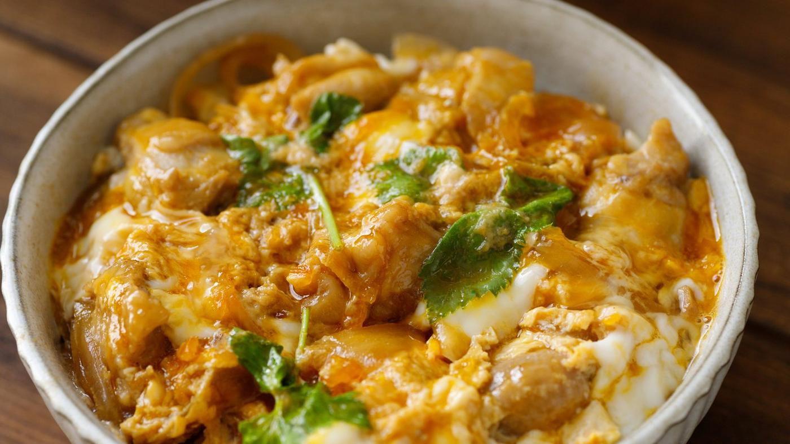

<- Home
Oyakodon

Description
Enjoy one of Japan’s most popular and easy-to-make fast food dishes in the comfort of your own home. Oyakodon is a one-bowl meal consisting of a bed of rice topped with chicken and egg (hence the name ‘oyako’, meaning ‘parent and child’) and seasoned with soy sauce, mirin, and dashi. A guaranteed mealtime favourite, we recommend you serve this as soon as you finish making it.
Ingredients
- 1 onion
- 150ml dashi stock
- 1 tbsp soy sauce
- 1 tbsp mirin
- pinch of sugar
- 2 eggs
- 500g cooked rice
- 1 spring onion
Steps
- Cut the chicken into pieces:
We need to prepare the chicken first so cut up 200g chicken into small bite-size pieces.
- Prepare the sauce:
Add 150ml dashi stock to your oyakodon pan or frying pan and heat before adding 1 tbsp mirin and 1 tbsp soy sauce plus a pinch of sugar. Bring to the boil and then simmer on medium heat. Now is also a good time to start cooking your rice separately so that it is ready for when you finish cooking the dish.
- Cook the chicken:
Once the soup has been simmering for a few minutes, add your pieces of chicken and cook. Once the chicken is done, about 10-12 minutes, chop up a whole onion into thin slices and add them to the pan.
- Add the eggs:
Beat 2 eggs in a bowl, then pour into the pan and let it cook for a few minutes. Try not to let the egg cook too much, about 1-2 minutes, a slightly runny texture is the preferred way to serve oyakodon.
- Serve and enjoy: When the eggs are done, turn off the heat and pour the egg and chicken over a bowl of freshly boiled white rice. Garnish with some finely sliced spring onions before serving, enjoy.